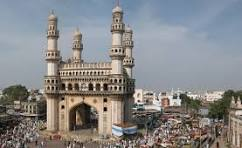

Charminar
The Charminar, constructed in 1591, is a monument and mosque located in Hyderabad, Telangana, India. The landmark has become known globally as a symbol of Hyderabad.
Location: Charminar Rd, Char Kaman, Ghansi Bazaar, Hyderabad, Telangana 500002, India
Ticket Price: INR 20 (Indian citizens), INR 250 (foreign tourists)
Transportation: Easily accessible by public transport, auto-rickshaws, and taxis.